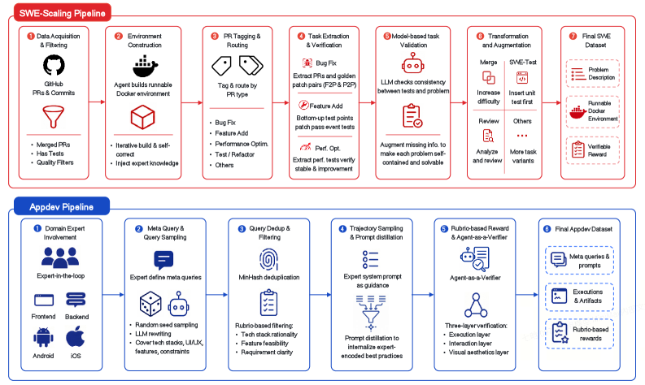
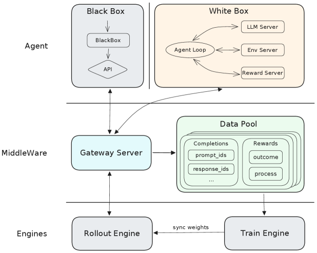
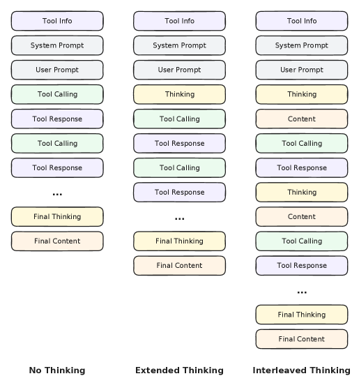
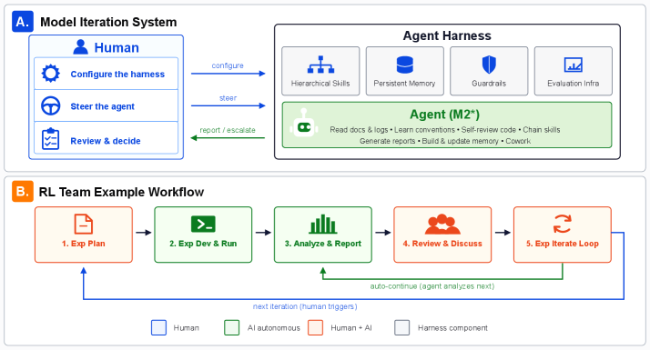

The MiniMax-M2 Series: Mini Activations Unleashing Max Real-World Intelligence
同样是 MoE，每个 token 只激活 ~10B 参数，却能在「智能体编程、智能体协同办公、推理与知识」三大真实任务上，逼平激活量大一个数量级的闭源前沿模型。
MiniMax-M2 的旗舰版是一个 62 层、229.9B 总参数、每 token 仅激活 9.8B 的解码器 Transformer（256 个细粒度专家、top-8 路由）。它从设计之初就为智能体部署而生，把这份「迷你激活」翻译成前沿级真实世界能力，靠的是三根支柱：
📄 原文：arXiv:2605.26494 · 作者 MiniMax · 通讯 model@minimax.io
大模型正从「短的、单轮的对话」迁移到「长程的、智能体式的工作流」——写代码并交付上线、在开放网页里检索、操作各种异构工具、产出结构化的办公文档，往往要跨越成百上千个「推理 + 动作」交替的步骤。
这个转变同时暴露出两个难题：
M2 的每个设计决策，都是在和下面这些「常规做法」做对照后才定下来的。点开每张卡片看它们各自的取舍。
做了什么：传统稠密模型里，每生成一个 token 都要让全部权重参与计算。参数越多，单 token 的算力（FLOPs）和显存开销就线性增长。
卡在哪：智能体任务动辄上百轮、几十万 token，稠密模型的「每 token 全激活」会让长程推理成本失控。M2 改用 MoE 稀疏化：总参数照样堆到 229.9B 以保住容量，但每 token 只激活其中 9.8B（256 个专家里选 8 个），把「容量」和「单步算力」解耦开。
做了什么：上一代 MiniMax-Text-01 探索了混合注意力（部分层用线性/lightning 注意力降低长上下文开销）。这是当时降低长序列成本的主流思路之一。
M2 的取舍：M2 在所有层都采用全量多头注意力（48 个 query 头、8 个 KV 头的 GQA + RoPE），明确表态「在大规模场景下我们更偏好全注意力」。省算力的担子，转交给 MoE 稀疏化与 MTP 投机解码去挑。
为什么这么做：全注意力在长程、需要精确跨步检索的智能体任务里表达力更稳；而效率问题用「细粒度专家 + 多 token 预测（MTP）+ 投机解码」这套组合拳来补，避免在注意力上做近似带来的能力损耗。
做了什么：常规 RLHF 主要优化「单轮回复的人类偏好」；不少 agent RL 则只在单一领域（如只刷编程题）上微调。
卡在哪：论文指出两类失败模式——单域 RL 会灾难性遗忘底座的通用推理与知识能力；跨域顺序训练又会负迁移，一个领域涨点、另一个领域掉点。同时，传统框架也难以承载「秒级到小时级」差异巨大、长达 192K token 的智能体轨迹。
M2 的回应：用 Forge 这套智能体原生 RL 系统 + 混合域 RL（每个阶段同时混合推理 / 编程 / 智能体 / 通用四类数据），并把「策略 = LLM、其余一切 = 环境」彻底解耦，详见下一节。
先看底座架构，再依次拆开三根支柱：数据管线 → Forge RL 系统 → 智能体机制（交错思考 + 自进化）。
预训练在 29.2T token 上完成，确立基础能力；M2 真正的「真实世界能力」绝大部分由后续的智能体原生后训练构建，并随 M2 → M2.5 → M2.7 持续演进。
三处关键设计：细粒度专家（更多更小的专家，提高路由组合多样性、降低跨设备负载方差）、sigmoid 门控 + 可学习专家偏置（改善负载均衡、几乎免去辅助损失）、以及 MTP 模块（预训练提供更丰富训练信号，推理时充当投机解码的 draft 路径）。
论文反复强调：把每条被接受轨迹的奖励质量与可信度提上去——无论是靠可执行的验证信号，还是靠裁判模型的证据核查——是「释放底座潜能」的头等大事。下图是其中最核心的两条编程数据管线。

一句话：把「嘈杂的真实代码 / 专家知识」自动转化为「可执行、可验证、带奖励」的大规模训练样本，这正是 M2 编程能力的源头。
除了编程，智能体协同办公（Cowork）同样遵循「真实可运行工作区 + 与产物形态对齐的验证信号」这一共同范式，覆盖四大领域：
推理密集任务：沿「查询侧 / 回答侧 / 训练侧」三轴扩展——扩充独特题目、为每题生成多条正确解法（提升 OOD 泛化）、并在固定算力下调优「扩题 vs 扩解」的混合比例；配合多阶段质检（查询、验证器、答案、回答四个环节各自把关）。
通用对话与写作：以高质量 long-CoT 为主，注入推理能力的同时保住通用能力，为后续 RL 提供稳定冷启动；同时混入「带工具」与「不带工具」两类样本。
角色扮演与人设一致性：当作独立 track，提出 Role-Play Bench，基于「错配可客观检测、对齐却主观」的洞见，用自博弈合成数据并通过 RLHF 优化，配合熵监控抑制 reward hacking。
Forge 的设计起点是一个干净的抽象：把 LLM 当作策略 (policy)，把模型生成之外的一切——上下文管理、记忆访问、工具执行、智能体状态转移——统统看作「环境」。边界就划在「模型的生成接口」上。这让标准 RL 框架能自然地容纳智能体系统的复杂度。下图是 Forge 的系统总览。

一句话：Gateway + Data Pool 这层「中间件」把智能体彻底从训练循环里解耦出来，所以无论是白盒还是黑盒、无论脚手架多复杂，都能塞进同一套 RL 循环。
在这套架构之上，Forge 还有几个关键的算法与系统设计：
沿用 MiniMax-M1 的 Clipped Importance Sampling Policy Optimization：对重要性采样比做非对称裁剪（上界限制过大更新，下界为 0 允许激进降权），并对裁剪后的比值做 stop-gradient，得到稳定的一阶更新。
单纯的结果奖励不足以在 192K token、上千动作的轨迹里做信用分配。M2 用三项复合：过程奖励（密集、惩罚语言混杂/工具格式错误）、完成时间奖励（鼓励并行工具调用）、性能奖励，再配 reward-to-go + 轨迹基线降方差。
智能体 rollout 完成时间从秒到小时不等。严格 FIFO 保分布但有队头阻塞，贪婪调度高吞吐却分布漂移。M2 在大小为 W=0.3N 的滑动窗口内贪婪、跨窗口严格有序，在两者间取得可调折中。
多轮轨迹里同组样本共享大量前缀。把它们合并成一棵前缀树：共享前缀只在前向传播算一次，再分叉到各自的回复段。数学上与逐样本训练完全等价（零近似误差），却带来最高 40× 训练加速。
此外，推理侧用了三招提速：MTP 投机解码（MTP 模块与 RL 策略持续协同训练，保证策略漂移时 draft 接受率仍高）、Prefill-Decode 异构分离、全局 L3 KV 缓存池。训练层面则采用混合域 RL：每阶段同时混合推理 / 编程 / 智能体 / 通用四域数据，并跨阶段调节域配比、上下文长度等，既防遗忘又防负迁移。
有了底座和 RL 系统，最后要解决的是「模型在多步任务里怎么思考、怎么自己变强」。M2 把交错思考（Interleaved Thinking）当作一等公民的智能体建模原则。

交错思考把每一轮变成一个 Plan（回顾状态、定策略）→ Act（执行工具）→ Reflect（对照观测、更新世界模型） 的认知循环；消融实验显示：在深度检索、软件工程这类需要长链规划的任务上，保留推理状态带来的提升最显著。
更进一步，M2.7 在交错思考能力之上，迈出了自进化的第一步——不再只是被动接受训练，而是主动驱动自己的迭代开发。

效果：M2.7 已能自动分诊失败的训练任务、改配置、调代码，吸收掉团队30%–50% 的日常迭代工作量；在一次完全自主的 100 轮脚手架优化中，它引入了循环检测等机制、找到更优参数组合，带来内部评测 +30% 的提升——模型开始改进「塑造它自己下一轮迭代」的基础设施。
M2.7 与最强闭源前沿推理模型（Claude Opus 4.6、Claude Sonnet 4.6、GPT 5.4、Gemini 3.1 Pro）在三大能力域对标，并刻意偏向「长程、环境扎根」的基准而非封闭式问答。代表性结果（M2.7）：
局限与展望：作者把这些结果定位为「更长旅程上的一步」——数据、RL 系统、自进化三条轴都远未饱和，后续 M2.x 版本会继续在三者上协同扩展。自进化目前仍是「早期可运行形态」，主要在 ML 工程类代表性任务上验证。